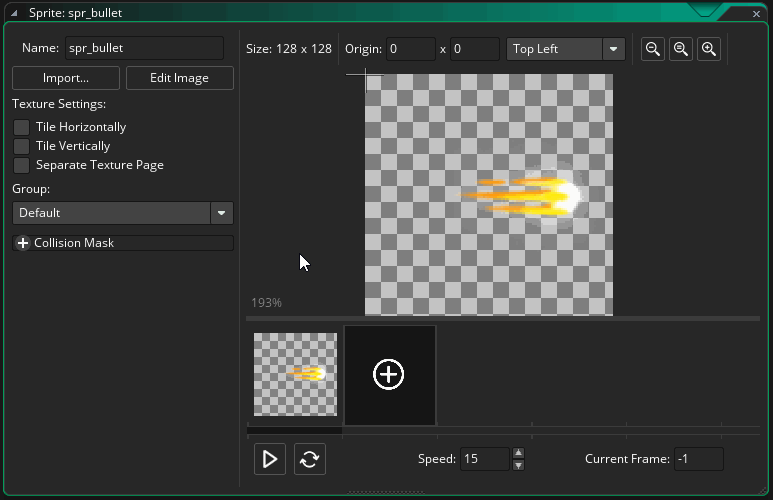

This chapter picks up where the previous chapter left off. In the previous chapter, you created a sprite, assigned it to an object and placed an instance of that object in a room. You then made it move around with the arrow keys, and always rotate to point at the mouse position. That was a good start, but it still wasn't a game, so in this tutorial we're going to add a shooting mechanic to the project.
NOTE: If you close the accompanying video then you can get it back by clicking here
Obviously the first thing we are going to need is a new sprite to represent a bullet. We covered how to add a sprite in the first part of this tutorial, so we'll only briefly run through the procedure here:
- Click the right mouse
 on the Sprites resource folder
on the Sprites resource folder
- Select "Create" to create a new sprite
- Name the sprite "spr_bullet"
- Click
 "Import" and choose a suitable sprite (remember, while following this tutorial the file explorer should take you to the TutorialResources folder automatically where you can find the sprites used in the "Images" sub-folder). If you have any issues, you can also find the images here.
"Import" and choose a suitable sprite (remember, while following this tutorial the file explorer should take you to the TutorialResources folder automatically where you can find the sprites used in the "Images" sub-folder). If you have any issues, you can also find the images here.
- Place the origin of the sprite
If you have used the sprite that we used for the tutorial, you should be placing the origin near the bullet image "head" (as shown in the image below), as that is the point that we want to rotate it around and "pin" it into the room with. If you have used your own sprite then click the image where you think would be best place to put the origin for the image.
